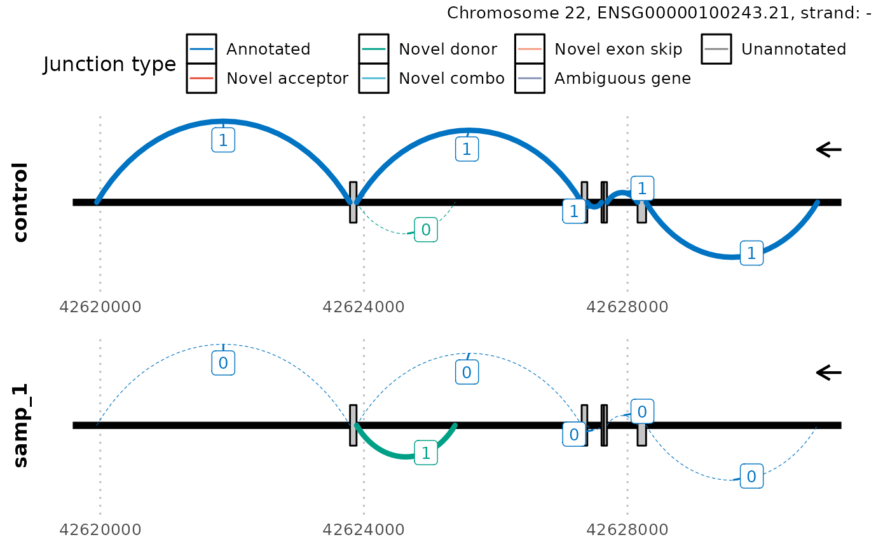

Introduction to dasper
David Zhang
UCLdavid.zhang.12@ucl.ac.uk
2 October 2020
Source:vignettes/dasper.Rmd
dasper.RmdBasics
Install dasper
R is an open-source statistical environment which can be easily modified to enhance its functionality via packages. dasper is a R package available via the Bioconductor repository for packages. R can be installed on any operating system from CRAN after which you can install dasper by using the following commands in your R session:
if (!requireNamespace("BiocManager", quietly = TRUE)) { install.packages("BiocManager") } BiocManager::install("dzhang32/dasper") ## Check that you have a valid Bioconductor installation BiocManager::valid()
Required knowledge
The expected input of dasper are junctions reads (directly outputted from an aligner such as STAR or extracted from a BAM file using megadepth) and coverage in the form of BigWig files (which can be generated from BAM files using megadepth or RSeQC. dasper is based on many other packages and in particular in those that have implemented the infrastructure needed for dealing with RNA-sequencing data. The packages SummarizedExperiment and GenomicRanges are used throughout, therefore familiarity with these packages will greatly help in interpreting the output of dasper.
If you are asking yourself the question “Where do I start using Bioconductor?” you might be interested in this blog post. Or if you find the structure of a SummarizedExperiment unclear, check out this manual.
Asking for help
As package developers, we try to explain clearly how to use our packages and in which order to use the functions. But R and Bioconductor have a steep learning curve so it is critical to learn where to ask for help. The blog post quoted above mentions some but we would like to highlight the Bioconductor support site as the main resource for getting help: remember to use the dasper tag and check the older posts. Other alternatives are available such as creating GitHub issues and tweeting. However, please note that if you want to receive help you should adhere to the posting guidelines. It is particularly critical that you provide a small reproducible example and your session information so package developers can track down the source of the error.
Citing dasper
We hope that dasper will be useful for your research. Please use the following information to cite the package and the overall approach. Thank you!
## Citation info citation("dasper") #> #> dzhang32 (2020). _Detecting abberant splicing events from #> RNA-sequencing data_. doi: 10.18129/B9.bioc.dasper (URL: #> https://doi.org/10.18129/B9.bioc.dasper), #> https://github.com/dzhang32/dasper - R package version 0.99.0, <URL: #> http://www.bioconductor.org/packages/dasper>. #> #> dzhang32 (2020). "Detecting abberant splicing events from #> RNA-sequencing data." _bioRxiv_. doi: 10.1101/TODO (URL: #> https://doi.org/10.1101/TODO), <URL: #> https://www.biorxiv.org/content/10.1101/TODO>. #> #> To see these entries in BibTeX format, use 'print(<citation>, #> bibtex=TRUE)', 'toBibtex(.)', or set #> 'options(citation.bibtex.max=999)'.
Quick start guide
Workflow

The above workflow diagram gives a top-level overview of the core functions within dasper and describes the order in which they are intended to be run. This are broadly split into 4 categories:
-
Process junctions functions are prefixed with a junction_. They will load in your junctions into an
RangedSummarizedExperimentobject, annotate your junctions using reference annotation, filter out junctions for those that likely originate from techinical noise and normalise your junction counts to allow for comparison between samples. - Process coverage functions are prefixed with a coverage_. They annotate your junctions with coverage from associated regions then normalise this coverage to allow for comparison between samples.
- Outlier detection functions are prefixed with a outlier_. They will use a outlier detection algorithm (isolation forest) to detect the most outlier/abnormal/aberrant junctions in terms of their counts and assoicated coverage.
-
Sashimi plots are generated using the function
plot_sashimi. This enables you to select a gene, transcript or region of interest and plot the splicing and coverage across that region in the form of sashimi plot.
Example
dasper includes wrapper functions for the 3 major analysis steps in the workflow - processing junction data, processing coverage data, then performing outlier detection. If you are familiar with dasper or are uninterested with the intermediates, you can go from start to finish using these wrappers.
We must first initialise the Python version and example data to be used. dasper uses reticulate to interface run Python code from R. Specifically, dasper relies on the sklearn module to run the outlier detection functions.
if (.Platform$OS.type != "windows") { # tell reticulate to use the python3 install # if windows skip this step reticulate::use_python(Sys.which("python3"), required = TRUE) }
We need to install the system dependency megadepth
megadepth::install_megadepth() #> The latest megadepth version is 1.0.4 #> megadepth has been installed to /github/home/bin
dasper requires reference annotation that either inputted as a GTF path or pre-loaded into a TxDb object as shown below.
# shorten gtf url for vignette gtf_path <- paste0( "ftp://ftp.ensembl.org/pub/release-100/gtf/homo_sapiens/", "Homo_sapiens.GRCh38.100.gtf.gz" ) ref <- GenomicFeatures::makeTxDbFromGFF(gtf_path) #> Import genomic features from the file as a GRanges object ... OK #> Prepare the 'metadata' data frame ... OK #> Make the TxDb object ... OK
Junctions and BigWig files are the required input to dasper. For the purpose of this vignette we will use a BigWig file from the GTEx v6 data publicly hosted by recount2. In reality, you should use the BigWig files that correspond to the same samples as those your junction data originate from.
# Obtain the urls to the remotely hosted GTEx BigWig files url <- recount::download_study( project = "SRP012682", type = "samples", download = FALSE ) #> Setting options('download.file.method.GEOquery'='auto') #> Setting options('GEOquery.inmemory.gpl'=FALSE) #> No methods found in package 'IRanges' for request: 'values<-' when loading 'derfinder' #> No methods found in package 'IRanges' for request: 'values' when loading 'derfinder' # obtain the local path t bw_path <- file.path(tempdir(), basename(url[1])) download.file(url[1], bw_path)
A small set of example junctions are included within dasper.
library(dasper) junctions_example #> class: RangedSummarizedExperiment #> dim: 97671 5 #> metadata(0): #> assays(1): raw #> rownames: NULL #> rowData names(0): #> colnames(5): count_1 count_2 gtex_54020 gtex_51495 gtex_56930 #> colData names(2): samp_id case_control
The GTEx BigWigs have their chromosomes prefixed with a “chr”. For the purpose of this example, we have to make sure the junction and reference data have the same chromosome format.
GenomeInfoDb::seqlevels(junctions_example) <- paste0("chr", GenomeInfoDb::seqlevels(junctions_example)) GenomeInfoDb::seqlevels(ref) <- paste0("chr", GenomeInfoDb::seqlevels(ref))
Now we can run the 3 wrapper functions (junction_process, coverage_process and outlier_process) on the example data intialised above. They are designed to be compatible with the tidyverse pipe and the time-limiting steps of this analysis can be parallelised using BiocParallel as shown. The returned outlier_scores object describes how aberrant each gene in each sample looks in terms of splicing. These are ranked in the rank column with 1 referring to the most aberrant looking gene. The specific junctions that look the most aberrant for each gene can be found in the junctions column.
library(magrittr) outlier_scores <- junction_process(junctions_example, ref) %>% coverage_process(ref, coverage_paths_case = rep(bw_path, 2), coverage_paths_control = rep(bw_path, 3), coverage_chr_control = "chr", bp_param = BiocParallel::MulticoreParam(5) ) %>% outlier_process(bp_param = BiocParallel::MulticoreParam(5)) head(outlier_scores)
Comprehensive usage guide
Here, we give run each of the 1-9 functions shown in workflow. These can be helpful for users that want to understand or modify the intermediates of the dasper pipeline or are only interested in a executing a specific step (e.g. annotating junctions using junction_annot).
Junction processing
The first step is to load in patient(and control junction data using junction_load. This expects as input the paths to junction files (by default) in the format outputted by the STAR aligner (SJ.out). If the user’s junctions are in a different format you can accomodate this by adjusting the load_func argument. This will return junctions as a RangedSummarizedExperiment object required for the downstream dasper functions.
Additionally, you can choose to add a set of control junctions from GTEx to compare the patient junctions too. These are made publicly available through the recount2. In this example, we add the GTEx junctions from the fibroblast tissue. We would recommend matching the control tissue to the tissue from which your patient RNA-seq data was derived.
junctions_example_1_path <- system.file("extdata", "junctions_example_1.txt", package = "dasper", mustWork = TRUE) junctions_example_2_path <- system.file("extdata", "junctions_example_2.txt", package = "dasper", mustWork = TRUE) # only use chromosomes 21 + 22 for vignette speed junctions <- junction_load( junction_paths = c(junctions_example_1_path, junctions_example_2_path), controls = "fibroblasts", chrs = c("21", "22") ) #> [1] "2020-10-02 23:03:53 - Loading junctions for sample 1/2..." #> [1] "2020-10-02 23:03:53 - Loading junctions for sample 2/2..." #> [1] "2020-10-02 23:03:53 - Adding control junctions..." #> [1] "2020-10-02 23:03:53 - Downloading and importing fibroblasts junction data..." #> [1] "2020-10-02 23:04:39 - Tidying and storing junction data as a RangedSummarizedExperiment..." #> [1] "2020-10-02 23:04:41 - done!" junctions #> class: RangedSummarizedExperiment #> dim: 97671 286 #> metadata(0): #> assays(1): raw #> rownames: NULL #> rowData names(0): #> colnames(286): count_1 count_2 ... gtex_56472 gtex_57475 #> colData names(2): samp_id case_control
Next, we annotate our junctions using junction_annot. This will classify your junctions using reference annotation into the categories “annotated”, “novel_acceptor”, “novel_donor”, “novel_combo”, “novel_exon_skip”, “ambig_gene” and “unannotated”. Additionally, the genes/transcripts/exons that each junction overlaps will be stored in the SummarizedExperiment::rowData.
# take only the first 5 samples (2 cases, 3 controls) # to increase the speed of the vignette junctions <- junctions[, 1:5] # convert seqlevels to match the BigWig GenomeInfoDb::seqlevels(junctions) <- paste0("chr", GenomeInfoDb::seqlevels(junctions)) junctions <- junction_annot(junctions, ref) #> [1] "2020-10-02 23:04:41 - Obtaining co-ordinates of annotated exons and junctions from gtf/gff3..." #> [1] "2020-10-02 23:04:58 - Getting junction annotation using overlapping exons..." #> [1] "2020-10-02 23:05:00 - Tidying junction annotation..." #> [1] "2020-10-02 23:05:01 - Deriving junction categories..." #> [1] "2020-10-02 23:05:05 - done!" head(SummarizedExperiment::rowData(junctions)) #> DataFrame with 6 rows and 14 columns #> in_ref gene_id_start tx_name_start #> <logical> <CharacterList> <CharacterList> #> 1 FALSE #> 2 TRUE ENSG00000277117 ENST00000612610,ENST00000620481,ENST00000623960,... #> 3 TRUE ENSG00000277117 ENST00000612610,ENST00000620481,ENST00000623960,... #> 4 FALSE #> 5 FALSE #> 6 FALSE #> exon_name_start strand_start exon_width_start #> <CharacterList> <CharacterList> <IntegerList> #> 1 #> 2 ENSE00003728725,ENSE00003760332 + 291,291 #> 3 ENSE00003746700,ENSE00003759504 + 165,165 #> 4 #> 5 #> 6 #> gene_id_end tx_name_end #> <CharacterList> <CharacterList> #> 1 #> 2 ENSG00000277117 ENST00000612610,ENST00000620481,ENST00000623960,... #> 3 ENSG00000277117 ENST00000612610,ENST00000620481,ENST00000623960,... #> 4 #> 5 #> 6 #> exon_name_end strand_end exon_width_end #> <CharacterList> <CharacterList> <IntegerList> #> 1 #> 2 ENSE00003746700,ENSE00003759504 + 165,165 #> 3 ENSE00003753253,ENSE00003757428 + 36,36 #> 4 #> 5 #> 6 #> gene_id_junction strand_junction type #> <CharacterList> <CharacterList> <factor> #> 1 * unannotated #> 2 ENSG00000277117 + annotated #> 3 ENSG00000277117 + annotated #> 4 * unannotated #> 5 * unannotated #> 6 * unannotated
We can then filter our junctions using junction_filter. You have the option of choosing to filter by count, width, type and whether junctions overlap a particular genomic region region. The default settings used below filter only by count and require a junction to have at least 5 reads in at least 1 sample to be kept in.
junctions <- junction_filter(junctions, count_thresh = c(raw = 5), n_samp = c(raw = 1) ) #> [1] "2020-10-02 23:05:05 - Filtering junctions..." #> [1] "2020-10-02 23:05:06 - by count..." #> [1] "2020-10-02 23:05:06 - done!" junctions #> class: RangedSummarizedExperiment #> dim: 4873 5 #> metadata(0): #> assays(1): raw #> rownames: NULL #> rowData names(14): in_ref gene_id_start ... strand_junction type #> colnames(5): count_1 count_2 gtex_54020 gtex_51495 gtex_56930 #> colData names(2): samp_id case_control
We can then normalise our raw junctions counts into a percentage spliced in (PSI) using junction_norm. This will first cluster junctions by finding all other junctions that share an acceptor or donor with it. Then, calculate the PSI by dividing the number of reads supporting each junction with the total number of reads in it’s associated cluster.
junctions <- junction_norm(junctions) #> [1] "2020-10-02 23:05:06 - Clustering junctions..." #> [1] "2020-10-02 23:05:06 - Normalising junction counts..." #> [1] "2020-10-02 23:05:06 - done!" # save a separate object for plotting junctions_normed <- junctions # show the raw counts tail(SummarizedExperiment::assays(junctions)[["raw"]]) #> count_1 count_2 gtex_54020 gtex_51495 gtex_56930 #> [4868,] 0 0 2 4 6 #> [4869,] 0 0 39 20 54 #> [4870,] 0 0 5 2 1 #> [4871,] 0 0 82 57 125 #> [4872,] 0 9 0 0 0 #> [4873,] 0 12 0 0 0 # and those after normalisation tail(SummarizedExperiment::assays(junctions)[["norm"]]) #> count_1 count_2 gtex_54020 gtex_51495 gtex_56930 #> [4868,] 0 0.0000000 1.00000000 1.00000000 1.000000000 #> [4869,] 0 0.0000000 1.00000000 1.00000000 1.000000000 #> [4870,] 0 0.0000000 0.05747126 0.03389831 0.007936508 #> [4871,] 0 0.0000000 0.94252874 0.96610169 0.992063492 #> [4872,] 0 0.4285714 0.00000000 0.00000000 0.000000000 #> [4873,] 0 0.5714286 0.00000000 0.00000000 0.000000000
Finally, we need to score each patient junction by how much it’s counts deviates from the count distribution of the same junction in your control samples using junction_score. By default, this uses a z-score however this can be modified to a user-inputted functions by adjusting the argument score_func.
junctions <- junction_score(junctions) #> [1] "2020-10-02 23:05:06 - Calculating the direction of change of junctions..." #> [1] "2020-10-02 23:05:06 - Generating junction abnormality score..." #> [1] "2020-10-02 23:05:07 - done!"
Coverage processing
We then move on to loading and normalising the coverage across regions associated with each junction using coverage_norm. Namely, these are the 2 exonic regions flanking each junction and the intron inbetween. Given that there are 3 regions for each junction and we need to obtain coverage for every junction from every sample, this step can be very computationally intensive. Here, dasper allows parrallelisation across samples using BiocParallel and uses the tool megadepth developed by Chris Wilks, which is significantly faster than other tools (rtracklayer and pyBigWig) for loading coverage from BigWig files (see runtime comparison.
coverage <- coverage_norm(junctions, ref, coverage_paths_case = rep(bw_path, 2), coverage_paths_control = rep(bw_path, 3) ) #> [1] "2020-10-02 23:05:07 - Obtaining exonic and intronic regions to load coverage from..." #> [1] "2020-10-02 23:05:07 - Obtaining regions to use to normalise coverage..." #> [1] "2020-10-02 23:05:12 - Loading coverage..." #> [1] "2020-10-02 23:05:20 - Normalising coverage..." #> [1] "2020-10-02 23:05:20 - done!"
coverage_score is then used to compare the coverage associated with each junction with the coverage distribution in controls.
junctions <- coverage_score(junctions, coverage) #> [1] "2020-10-02 23:05:20 - Generating coverage abnormality score..." #> [1] "2020-10-02 23:05:20 - Obtaining regions with greatest coverage dysruption..." #> [1] "2020-10-02 23:05:20 - done!"
Outlier processing
The last step in the dasper pipeline is to use the junction count scores and coverage scores as input into an outlier detection model. This involves first using outlier_detect to score each junction in each sample by how aberrant it looks. This step can be computational intense and can be parallelised using BiocParallel. The fit of the isolation forest may change due to it’s intial random state, to avoid this and for reproducibility you can set the parameter random_state to an fixed integer.
junctions <- outlier_detect(junctions, bp_param = BiocParallel::MulticoreParam(2), random_state = 32L ) #> [1] "2020-10-02 23:05:21 - generating outlier scores for sample 2/2" #> [1] "2020-10-02 23:05:26 - fitting outlier detection model with parameters: behaviour=deprecated, bootstrap=FALSE, contamination=auto, max_features=1, max_samples=auto, n_estimators=100, n_jobs=NULL, random_state=32, verbose=0, warm_start=FALSE" #> [1] "2020-10-02 23:05:27 - fitting outlier detection model with parameters: behaviour=deprecated, bootstrap=FALSE, contamination=auto, max_features=1, max_samples=auto, n_estimators=100, n_jobs=NULL, random_state=32, verbose=0, warm_start=FALSE" #> [1] "2020-10-02 23:05:21 - generating outlier scores for sample 1/2" #> [1] "2020-10-02 23:05:26 - fitting outlier detection model with parameters: behaviour=deprecated, bootstrap=FALSE, contamination=auto, max_features=1, max_samples=auto, n_estimators=100, n_jobs=NULL, random_state=32, verbose=0, warm_start=FALSE" #> [1] "2020-10-02 23:05:27 - fitting outlier detection model with parameters: behaviour=deprecated, bootstrap=FALSE, contamination=auto, max_features=1, max_samples=auto, n_estimators=100, n_jobs=NULL, random_state=32, verbose=0, warm_start=FALSE" #> [1] "2020-10-02 23:05:28 - done!"
Then, using outlier_aggregate outlier scores aggregates the outlier splicing events to a cluster level. The annotation returned by junction_annot is used to link each cluster to a gene and produce a report of all genes in a sample ranked by how abberant they look in terms of splicing. The lower the rank, the more abberant that gene looks.
outlier_scores <- outlier_aggregate(junctions, bp_param = BiocParallel::MulticoreParam(2) ) #> [1] "2020-10-02 23:05:28 - Aggregating outlier scores to cluster level... " #> [1] "2020-10-02 23:05:29 - Annotating clusters with gene details..." #> [1] "2020-10-02 23:05:29 - done!" head(outlier_scores) #> DataFrame with 6 rows and 6 columns #> samp_id cluster_index mean_outlier_score rank gene_id_cluster #> <character> <character> <numeric> <numeric> <CharacterList> #> 1 samp_1 4123 -0.200174 1 ENSG00000100243 #> 2 samp_1 1286 -0.199448 2 ENSG00000142156 #> 3 samp_1 3993 -0.189962 3 ENSG00000100418 #> 4 samp_1 1000 -0.158565 4 ENSG00000160213 #> 5 samp_1 3456 -0.156321 5 ENSG00000100129 #> 6 samp_1 3462 -0.155961 6 ENSG00000100129 #> junctions #> <list> #> 1 4123: 1:-0.219912:...,4124:-1:-0.180436:...,... #> 2 1287:-1:-0.225970:...,1288: 1:-0.172927:...,... #> 3 3993: 1:-0.134843:...,3994:-1:-0.245081:...,... #> 4 1000: 1:-0.119976:...,1001:-1:-0.197153:...,... #> 5 3456: 1:-0.121972:...,3457:-1:-0.190670:...,... #> 6 3462: 1:-0.105657:...,3463:-1:-0.206265:...,...
Sashimi plots
In order to help further inspection of the candidate genes with abberrant splicing returned by dasper, we also include functions to visualise splicing across genes/transcripts/regions of interest. For example, you could visualise the most aberrant gene.
# take gene of rank 1 gene_id <- unlist(outlier_scores[["gene_id_cluster"]][1]) plot_sashimi(junctions_normed, ref, case_id = list(samp_id = "samp_1"), control_agg_func = mean, gene_tx_id = gene_id )

Often regions of splicing can be very complex within a gene and you may want to consider zooming in on a specific region of interest. Furthermore, the thickness of the lines represents the counts of each junction however in this way, it can be hard to accurately differentiate junctions that have similar counts. User’s may want to add a label representing the count of each junction using the argument count_label.
plot_sashimi(junctions_normed, ref, case_id = list(samp_id = "samp_1"), control_agg_func = mean, gene_tx_id = gene_id, region = GenomicRanges::GRanges("chr22:42620000-42630000"), count_label = TRUE )

Reproducibility
The dasper package (dzhang32, 2020) was made possible thanks to:
- R (R Core Team, 2020)
- BiocStyle (Oleś, Morgan, and Huber, 2020)
- knitcitations (Boettiger, 2019)
- knitr (Xie, 2020)
- rmarkdown (Allaire, Xie, McPherson, Luraschi, et al., 2020)
- sessioninfo (Csárdi, core, Wickham, Chang, et al., 2018)
- testthat (Wickham, 2011)
This package was developed using biocthis.
Code for creating the vignette
## Create the vignette library("rmarkdown") system.time(render("dasper.Rmd", "BiocStyle::html_document")) ## Extract the R code library("knitr") knit("dasper.Rmd", tangle = TRUE)
## Clean up file.remove("dasper.bib") #> [1] TRUE
Date the vignette was generated.
#> [1] "2020-10-02 23:05:35 UTC"Wallclock time spent generating the vignette.
#> Time difference of 3.388 minsR session information.
#> ─ Session info ───────────────────────────────────────────────────────────────────────────────────────────────────────
#> setting value
#> version R version 4.0.2 (2020-06-22)
#> os Ubuntu 20.04.1 LTS
#> system x86_64, linux-gnu
#> ui X11
#> language (EN)
#> collate en_US.UTF-8
#> ctype en_US.UTF-8
#> tz Etc/UTC
#> date 2020-10-02
#>
#> ─ Packages ───────────────────────────────────────────────────────────────────────────────────────────────────────────
#> package * version date lib source
#> abind 1.4-5 2016-07-21 [1] RSPM (R 4.0.0)
#> AnnotationDbi 1.51.3 2020-07-25 [1] Bioconductor
#> askpass 1.1 2019-01-13 [2] RSPM (R 4.0.0)
#> assertthat 0.2.1 2019-03-21 [2] RSPM (R 4.0.0)
#> backports 1.1.10 2020-09-15 [2] RSPM (R 4.0.2)
#> base64enc 0.1-3 2015-07-28 [2] RSPM (R 4.0.0)
#> bibtex 0.4.2.3 2020-09-19 [1] RSPM (R 4.0.2)
#> Biobase 2.49.1 2020-09-03 [1] Bioconductor
#> BiocFileCache 1.13.1 2020-08-04 [1] Bioconductor
#> BiocGenerics 0.35.4 2020-06-04 [1] Bioconductor
#> BiocManager 1.30.10 2019-11-16 [2] CRAN (R 4.0.2)
#> BiocParallel 1.23.2 2020-07-06 [1] Bioconductor
#> BiocStyle * 2.17.1 2020-09-24 [1] Bioconductor
#> biomaRt 2.45.3 2020-09-21 [1] Bioconductor
#> Biostrings 2.57.2 2020-06-09 [1] Bioconductor
#> bit 4.0.4 2020-08-04 [1] RSPM (R 4.0.2)
#> bit64 4.0.5 2020-08-30 [1] RSPM (R 4.0.2)
#> bitops 1.0-6 2013-08-17 [1] RSPM (R 4.0.0)
#> blob 1.2.1 2020-01-20 [1] RSPM (R 4.0.0)
#> bookdown 0.20 2020-06-23 [1] RSPM (R 4.0.2)
#> broom 0.7.1 2020-10-02 [1] RSPM (R 4.0.2)
#> BSgenome 1.57.6 2020-09-02 [1] Bioconductor
#> bumphunter 1.31.0 2020-04-28 [1] Bioconductor
#> car 3.0-10 2020-09-29 [1] RSPM (R 4.0.2)
#> carData 3.0-4 2020-05-22 [1] RSPM (R 4.0.0)
#> cellranger 1.1.0 2016-07-27 [1] RSPM (R 4.0.0)
#> checkmate 2.0.0 2020-02-06 [1] RSPM (R 4.0.0)
#> cli 2.0.2 2020-02-28 [2] RSPM (R 4.0.0)
#> cluster 2.1.0 2019-06-19 [3] CRAN (R 4.0.2)
#> codetools 0.2-16 2018-12-24 [3] CRAN (R 4.0.2)
#> colorspace 1.4-1 2019-03-18 [1] RSPM (R 4.0.0)
#> cowplot 1.1.0 2020-09-08 [1] RSPM (R 4.0.2)
#> crayon 1.3.4 2017-09-16 [2] RSPM (R 4.0.0)
#> curl 4.3 2019-12-02 [2] RSPM (R 4.0.0)
#> dasper * 0.99.0 2020-10-02 [1] Bioconductor
#> data.table 1.13.0 2020-07-24 [1] RSPM (R 4.0.2)
#> DBI 1.1.0 2019-12-15 [1] RSPM (R 4.0.0)
#> dbplyr 1.4.4 2020-05-27 [1] RSPM (R 4.0.0)
#> DelayedArray 0.15.13 2020-10-01 [1] Bioconductor
#> derfinder 1.23.1 2020-05-10 [1] Bioconductor
#> derfinderHelper 1.23.1 2020-05-10 [1] Bioconductor
#> desc 1.2.0 2018-05-01 [2] RSPM (R 4.0.0)
#> digest 0.6.25 2020-02-23 [2] RSPM (R 4.0.0)
#> doRNG 1.8.2 2020-01-27 [1] RSPM (R 4.0.0)
#> downloader 0.4 2015-07-09 [1] RSPM (R 4.0.0)
#> dplyr 1.0.2 2020-08-18 [1] RSPM (R 4.0.2)
#> ellipsis 0.3.1 2020-05-15 [2] RSPM (R 4.0.0)
#> evaluate 0.14 2019-05-28 [2] RSPM (R 4.0.0)
#> fansi 0.4.1 2020-01-08 [2] RSPM (R 4.0.0)
#> farver 2.0.3 2020-01-16 [1] RSPM (R 4.0.0)
#> forcats 0.5.0 2020-03-01 [1] RSPM (R 4.0.0)
#> foreach 1.5.0 2020-03-30 [1] RSPM (R 4.0.0)
#> foreign 0.8-80 2020-05-24 [3] CRAN (R 4.0.2)
#> Formula 1.2-3 2018-05-03 [1] RSPM (R 4.0.0)
#> fs 1.5.0 2020-07-31 [2] RSPM (R 4.0.2)
#> generics 0.0.2 2018-11-29 [1] RSPM (R 4.0.0)
#> GenomeInfoDb 1.25.11 2020-09-03 [1] Bioconductor
#> GenomeInfoDbData 1.2.3 2020-10-01 [1] Bioconductor
#> GenomicAlignments 1.25.3 2020-06-09 [1] Bioconductor
#> GenomicFeatures 1.41.3 2020-09-03 [1] Bioconductor
#> GenomicFiles 1.25.0 2020-04-27 [1] Bioconductor
#> GenomicRanges 1.41.6 2020-08-12 [1] Bioconductor
#> GEOquery 2.57.0 2020-04-27 [1] Bioconductor
#> ggplot2 3.3.2 2020-06-19 [1] RSPM (R 4.0.1)
#> ggpubr 0.4.0 2020-06-27 [1] RSPM (R 4.0.2)
#> ggrepel 0.8.2 2020-03-08 [1] RSPM (R 4.0.2)
#> ggsci 2.9 2018-05-14 [1] RSPM (R 4.0.0)
#> ggsignif 0.6.0 2019-08-08 [1] RSPM (R 4.0.0)
#> glue 1.4.2 2020-08-27 [2] RSPM (R 4.0.2)
#> gridExtra 2.3 2017-09-09 [1] RSPM (R 4.0.0)
#> gtable 0.3.0 2019-03-25 [1] RSPM (R 4.0.0)
#> haven 2.3.1 2020-06-01 [1] RSPM (R 4.0.2)
#> Hmisc 4.4-1 2020-08-10 [1] RSPM (R 4.0.2)
#> hms 0.5.3 2020-01-08 [1] RSPM (R 4.0.0)
#> htmlTable 2.1.0 2020-09-16 [1] RSPM (R 4.0.2)
#> htmltools 0.5.0 2020-06-16 [2] RSPM (R 4.0.1)
#> htmlwidgets 1.5.1 2019-10-08 [2] RSPM (R 4.0.0)
#> httr 1.4.2 2020-07-20 [2] RSPM (R 4.0.2)
#> IRanges 2.23.10 2020-06-13 [1] Bioconductor
#> iterators 1.0.12 2019-07-26 [1] RSPM (R 4.0.0)
#> jpeg 0.1-8.1 2019-10-24 [1] RSPM (R 4.0.0)
#> jsonlite 1.7.1 2020-09-07 [2] RSPM (R 4.0.2)
#> knitcitations * 1.0.10 2019-09-15 [1] RSPM (R 4.0.0)
#> knitr 1.30 2020-09-22 [2] RSPM (R 4.0.2)
#> labeling 0.3 2014-08-23 [1] RSPM (R 4.0.0)
#> lattice 0.20-41 2020-04-02 [3] CRAN (R 4.0.2)
#> latticeExtra 0.6-29 2019-12-19 [1] RSPM (R 4.0.0)
#> lifecycle 0.2.0 2020-03-06 [2] RSPM (R 4.0.0)
#> limma 3.45.14 2020-09-12 [1] Bioconductor
#> locfit 1.5-9.4 2020-03-25 [1] RSPM (R 4.0.0)
#> lubridate 1.7.9 2020-06-08 [1] RSPM (R 4.0.2)
#> magrittr 1.5 2014-11-22 [2] RSPM (R 4.0.0)
#> Matrix 1.2-18 2019-11-27 [3] CRAN (R 4.0.2)
#> MatrixGenerics 1.1.3 2020-09-30 [1] Bioconductor
#> matrixStats 0.57.0 2020-09-25 [1] RSPM (R 4.0.2)
#> megadepth 0.99.1 2020-10-02 [1] Github (LieberInstitute/megadepth@da650ea)
#> memoise 1.1.0 2017-04-21 [2] RSPM (R 4.0.0)
#> munsell 0.5.0 2018-06-12 [1] RSPM (R 4.0.0)
#> nnet 7.3-14 2020-04-26 [3] CRAN (R 4.0.2)
#> openssl 1.4.3 2020-09-18 [2] RSPM (R 4.0.2)
#> openxlsx 4.2.2 2020-09-17 [1] RSPM (R 4.0.2)
#> pillar 1.4.6 2020-07-10 [2] RSPM (R 4.0.2)
#> pkgconfig 2.0.3 2019-09-22 [2] RSPM (R 4.0.0)
#> pkgdown 1.6.1.9000 2020-10-01 [1] Github (r-lib/pkgdown@e1e46f2)
#> plyr 1.8.6 2020-03-03 [1] RSPM (R 4.0.2)
#> plyranges 1.9.3 2020-05-28 [1] Bioconductor
#> png 0.1-7 2013-12-03 [1] RSPM (R 4.0.0)
#> prettyunits 1.1.1 2020-01-24 [2] RSPM (R 4.0.0)
#> progress 1.2.2 2019-05-16 [1] RSPM (R 4.0.0)
#> purrr 0.3.4 2020-04-17 [2] RSPM (R 4.0.0)
#> qvalue 2.21.0 2020-04-27 [1] Bioconductor
#> R6 2.4.1 2019-11-12 [2] RSPM (R 4.0.0)
#> ragg 0.3.1 2020-07-03 [1] RSPM (R 4.0.2)
#> rappdirs 0.3.1 2016-03-28 [1] RSPM (R 4.0.0)
#> RColorBrewer 1.1-2 2014-12-07 [1] RSPM (R 4.0.0)
#> Rcpp 1.0.5 2020-07-06 [2] RSPM (R 4.0.2)
#> RCurl 1.98-1.2 2020-04-18 [1] RSPM (R 4.0.0)
#> readr 1.3.1 2018-12-21 [1] RSPM (R 4.0.2)
#> readxl 1.3.1 2019-03-13 [1] RSPM (R 4.0.2)
#> recount 1.15.1 2020-05-12 [1] Bioconductor
#> RefManageR 1.2.12 2019-04-03 [1] RSPM (R 4.0.0)
#> rentrez 1.2.2 2019-05-02 [1] RSPM (R 4.0.0)
#> reshape2 1.4.4 2020-04-09 [1] RSPM (R 4.0.2)
#> reticulate 1.16 2020-05-27 [1] RSPM (R 4.0.2)
#> rio 0.5.16 2018-11-26 [1] RSPM (R 4.0.0)
#> rlang 0.4.7 2020-07-09 [2] RSPM (R 4.0.2)
#> rmarkdown 2.4 2020-09-30 [1] RSPM (R 4.0.2)
#> rngtools 1.5 2020-01-23 [1] RSPM (R 4.0.0)
#> rpart 4.1-15 2019-04-12 [3] CRAN (R 4.0.2)
#> rprojroot 1.3-2 2018-01-03 [2] RSPM (R 4.0.0)
#> Rsamtools 2.5.3 2020-06-26 [1] Bioconductor
#> RSQLite 2.2.1 2020-09-30 [1] RSPM (R 4.0.2)
#> rstatix 0.6.0 2020-06-18 [1] RSPM (R 4.0.1)
#> rstudioapi 0.11 2020-02-07 [2] RSPM (R 4.0.0)
#> rtracklayer 1.49.5 2020-08-07 [1] Bioconductor
#> S4Vectors 0.27.13 2020-09-18 [1] Bioconductor
#> scales 1.1.1 2020-05-11 [1] RSPM (R 4.0.0)
#> sessioninfo * 1.1.1 2018-11-05 [2] RSPM (R 4.0.0)
#> stringi 1.5.3 2020-09-09 [2] RSPM (R 4.0.2)
#> stringr 1.4.0 2019-02-10 [2] RSPM (R 4.0.0)
#> SummarizedExperiment 1.19.9 2020-10-01 [1] Bioconductor
#> survival 3.2-7 2020-09-28 [3] RSPM (R 4.0.2)
#> systemfonts 0.3.2 2020-09-29 [1] RSPM (R 4.0.2)
#> testthat 2.3.2 2020-03-02 [2] RSPM (R 4.0.0)
#> tibble 3.0.3 2020-07-10 [2] RSPM (R 4.0.2)
#> tidyr 1.1.2 2020-08-27 [1] RSPM (R 4.0.2)
#> tidyselect 1.1.0 2020-05-11 [1] RSPM (R 4.0.0)
#> VariantAnnotation 1.35.3 2020-06-26 [1] Bioconductor
#> vctrs 0.3.4 2020-08-29 [2] RSPM (R 4.0.2)
#> withr 2.3.0 2020-09-22 [2] RSPM (R 4.0.2)
#> xfun 0.18 2020-09-29 [1] RSPM (R 4.0.2)
#> XML 3.99-0.5 2020-07-23 [1] RSPM (R 4.0.2)
#> xml2 1.3.2 2020-04-23 [2] RSPM (R 4.0.0)
#> XVector 0.29.3 2020-06-25 [1] Bioconductor
#> yaml 2.2.1 2020-02-01 [2] RSPM (R 4.0.0)
#> zip 2.1.1 2020-08-27 [1] RSPM (R 4.0.2)
#> zlibbioc 1.35.0 2020-04-27 [1] Bioconductor
#>
#> [1] /usr/local/lib/R/host-site-library
#> [2] /usr/local/lib/R/site-library
#> [3] /usr/local/lib/R/libraryBibliography
This vignette was generated using BiocStyle (Oleś, Morgan, and Huber, 2020) with knitr (Xie, 2020) and rmarkdown (Allaire, Xie, McPherson, Luraschi, et al., 2020) running behind the scenes.
Citations made with knitcitations (Boettiger, 2019).
[1] J. Allaire, Y. Xie, J. McPherson, J. Luraschi, et al. rmarkdown: Dynamic Documents for R. R package version 2.4. 2020. <URL: https://github.com/rstudio/rmarkdown>.
[2] C. Boettiger. knitcitations: Citations for ‘Knitr’ Markdown Files. R package version 1.0.10. 2019. <URL: https://github.com/cboettig/knitcitations>.
[3] G. Csárdi, R. core, H. Wickham, W. Chang, et al. sessioninfo: R Session Information. R package version 1.1.1. 2018. <URL: https://github.com/r-lib/sessioninfo#readme>.
[4] dzhang32. Detecting abberant splicing events from RNA-sequencing data. https://github.com/dzhang32/dasper - R package version 0.99.0. 2020. DOI: 10.18129/B9.bioc.dasper. <URL: http://www.bioconductor.org/packages/dasper>.
[5] A. Oleś, M. Morgan, and W. Huber. BiocStyle: Standard styles for vignettes and other Bioconductor documents. R package version 2.17.1. 2020. <URL: https://github.com/Bioconductor/BiocStyle>.
[6] R Core Team. R: A Language and Environment for Statistical Computing. R Foundation for Statistical Computing. Vienna, Austria, 2020. <URL: https://www.R-project.org/>.
[7] H. Wickham. “testthat: Get Started with Testing”. In: The R Journal 3 (2011), pp. 5-10. <URL: https://journal.r-project.org/archive/2011-1/RJournal_2011-1_Wickham.pdf>.
[8] Y. Xie. knitr: A General-Purpose Package for Dynamic Report Generation in R. R package version 1.30. 2020. <URL: https://yihui.org/knitr/>.